«...каждая клетка несёт свою энергоинформационную составляющую, управляя ЦЕЛЫМ,
как и ЦЕЛОЕ, аккумулируя всю информацию, управляет клетками,
являющимися фрактальным подобием ЦЕЛОГО – человека!»
(«Откровения людям Нового века», Послание от 16.01.14, стих 12, книга XI).
Организм человека является чувствительным прибором — нативным биосенсором, который пропускает и преобразует неограниченное количество встречных волновых потоков; вмещает огромные объёмы информации не только об организме, но и о близком и дальнем окружении человека и даже о Космосе и Вселенной.
Кровь наиболее чувствительна к слабым информационным воздействиям, так как несёт основную нагрузку для гармонизации всех систем, органов и тканей. Вся кровеносная система участвует в информационном метаболизме и преобразует все данные по законам кибернетики через: восприятие, хранение, переработку и выдачу информации о биосистеме на молекулярном, акустическом, электромагнитном, волновом и других уровнях.
Кровь — это важная жизненная среда, за счёт которой происходит обмен информацией по законам резонансных явлений, создающих ЦЕЛОСТНОСТЬ и работу организма по единым законам:
«...Универсальности, Комплементарности, фрактального самоподобия и кластерного (резонансного) строения полей, обеспечивающих, тем не менее, Целостность и Единство встречных волновых потоков, Целостность и Единство Пространства» («Откровения людям Нового века», Послание от 02.07.08, стих 20, книга V).
В Холдинге «Научно-исследовательские институты Здоровьесберегающих технологий», в Ярославском филиале НИИ ЗСТ проводятся исследования крови и влияния энерго-информационных полей на организм человека.
В результате проведенного многофакторного спектрально-энтропийного анализа, а так же дополнительных цитохимических, инфракрасных, ультразвуковых методов исследования осуществлялась коррекция функционального состояния определенной системы, органа, ткани или клетки, через оптимизацию их спинового векторного баланса. Коррекционное воздействие в каждом случае было индивидуально направленное с учетом сопутствующих заболеваний и особенностей каждого человека.
Цитологический метод окрашивания крови по Романовскому-Гимзе имеет огромное значение для морфологической идентификации гемопоэтических и других типов клеток. Посредством окрашивания биологических препаратов смесью азура В, эозина и метиленового синего, форменные элементы приобретают полихромную окраску, хорошо различимую при помощи световой оптической микроскопии. Например, в окрашенном мазке крови эритроциты приобретают розово-коричневый оттенок, лейкоциты — сиреневый (ядра — фиолетовый), грануломеры тромбоцитов — красный, гиаломеры — голубой оттенки.
Данный метод исследования позволяет четко определять ранние некробиотические изменения в клетках, с высочайшей точностью идентифицировать патогенных простейших паразитов крови, определить острые и хронические заболевания, воспалительные процессы, а так же оценивать возможные изменения в количественном и качественном составе клеток кроветворной системы. Например, в таблицах 1а и 1б показана методика изучения крови «золотым стандартом» (по Романовскому-Гимзе) на одном из многих пациентов.
Таблица 1а
До коррекции
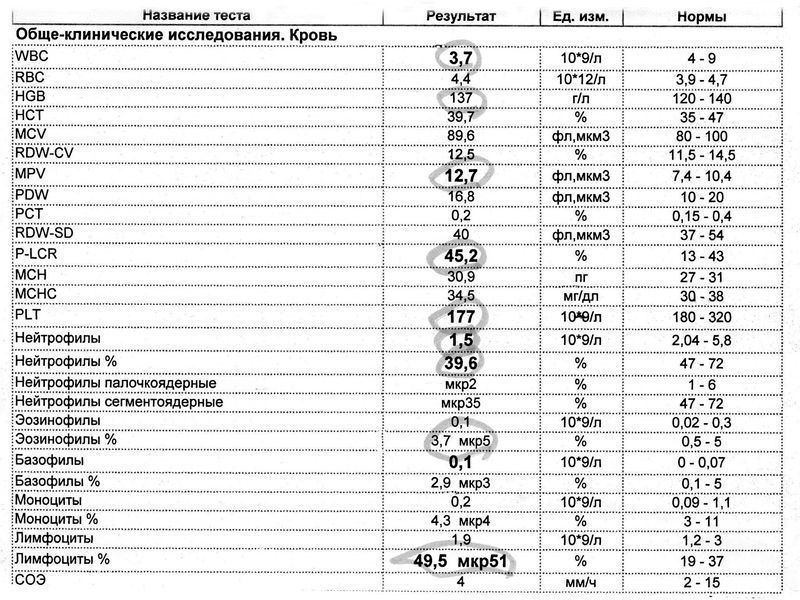
Таблица 1б
После коррекции
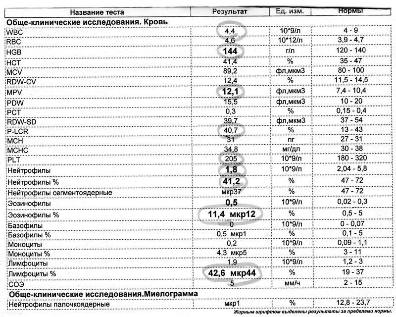
Исследование позволяет комплексно охарактеризовать состояние кроветворного аппарата и в динамике оценить текущую картину здоровья данного пациента в соответствии с имеющимися хроническими и острыми процессами до информационного воздействия и после.
Световая микроскопия мазка крови выявила достоверную положительную динамику ключевых компонентов иммунной системы — лейкоцитов WBC (white blood cells), выраженных в процентном отношении таких показателей, как лимфоциты LYM% (lymphocyte) , сегментоядерные и палочкоядерные нейтрофилы. В данном случае, мобилизация иммунной системы важный фактор в лечении и устранении хронической интоксикации инфекционно-паразитарной этиологии.
После информационного воздействия (таблица 1б), по микроскопии окрашенного мазка крови прослеживается эффективность метода, так как происходит нарастание цитотоксического потенциала эозинофильной группы, формируется естественная защита клетки. Более того, улучшаются показатели сосудисто-тромбоцитарного гемостаза, PLT (platelets) — тромбоциты и МРV (mean platelets volume) — средний объем тромбоцитов, регулируется фибринолиз, а значит, поддерживается равновесие симпатической и парасимпатической нервной системы. Показатели гемоглобина (HGB) увеличиваются, оказывая наилучшую доставку кислорода и других необходимых веществ к жизненно важным органам и системам. Оказывается общее терапевтическое действие на организм человека, в большей или меньшей степени зависящее от общих патофизиологических явлений в организме.
Важным анализом для исследования воздействия тонко-полевого сигнала для улучшения самочувствия, профилактики и даже начало процесса выздоровления показал научно-медицинский способ Пигаревского В.Е. Способ определения лизосомальных катионных белков (ЛКБ) в гранулоцитах тканей. ЛКБ обладают универсальной антивирусной и антимикробной активностью, свойствами медиатора воспаления, стимулятора фагоцитоза, ферментативных процессов в клетке. Научное изобретение даёт возможность осуществить исследование операционных биоматериалов, биопсий, крови, с целью диагностики и оценки воспалительных процессов, болезней крови и кроветворных органов, инфекционных заболеваний, онкологии и иммунодефицитных состояний, контроль терапии цитостатиками, иммунодепрессантами и иммуномодуляторами. Лизосомально-катионный тест — это интегральный, экспрессивный метод оценки состояния неспецифической резистентности организма и возможность оценки эффективности проводимой терапии. После обработки мазков крови в лаборатории, окрашенный материал рассматривают с помощью иммерсионного объектива микроскопа с 900-1000 — кратным увеличением.
В Ярославском филиале провели обследование большого количества пациентов через ЛКБ тест. Осуществляли забор крови перед коррекцией, через 10 минут, через 2 часа после воздействия. Получили уникальные, достоверные результаты об улучшении здоровья и психофизического состояния от неинвазивного и нелекарственного лечения и профилактики.
В лизосомально-катионном тесте определяют 3 важных показателя:
1) норма среднего цитохимического коэффициента (СКЦ) катионных белков для взрослых — 1,58 + 00,1;
2) норма аномальных гранул (А-гр) не должна превышать — 3-4 ед.;
3) завершённость фагоцитоза в норме — 66,3 +/– 2,6 %.
К сожалению, у всех пациентов до воздействия тонко-полевых механизмов средние показатели были в негативном состоянии из-за хронических болезней, вирусных заболеваний и слабого иммунитета. Только у одного человека средний цитохимический коэффициент катионных белков составлял 1,05, при норме 1,58, а у остальных 0,93; 0,83; 0,72 и ниже... Ни у одного исследуемого не было в норме аномальных гранул, а составляли до 8-9 в 100 нейтрофилах, что говорит о токсикации организма, о вирусных заражениях и неспособности организма держать баланс в сторону гармонии, омоложения и сопротивления негативной среде.
При положительной завершённости фагоцитоза в норме в 66,6 %, то самый высокий показатель был только у одной пациентки — 63%, а у остальных ниже 52 %. Показатели изменились после оптимизации спинового векторного баланса на системы и органы исследуемых людей.
На фотографиях иммерсионного микроскопа (рис. 1, рис. 2) показаны изменения структурно-функционального потенциала нейтрофильных гранулоцитов в клетках крови.
| 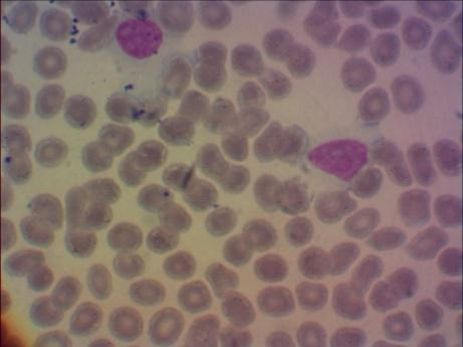 | 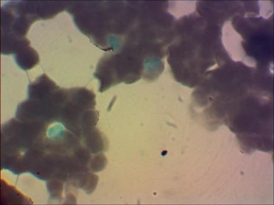 | 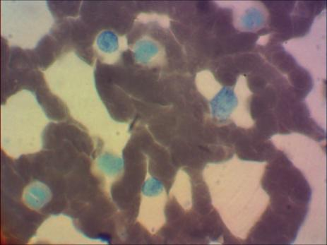 |
| а) | б) | в) |
| Рисунок 1 | ||
|
На фото (рис. 1а) до воздействия информационных полей показатели: СЦХ — 0, 89 А-гр — 7 Фагоцитоз — 43% |
На фото (рис. 1б) через 10 минут после воздействия: СЦХ —1,75 А-гр — 4 Фагоцитоз — 45% |
На фото (рис. 1в) через 2 часа после воздействия: СЦХ — 1,64 А-гр — 5 Фагоцитоз — 62% |
| 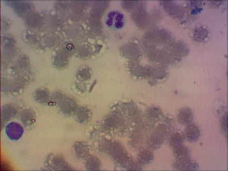 | 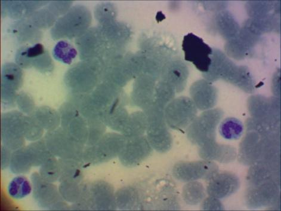 | 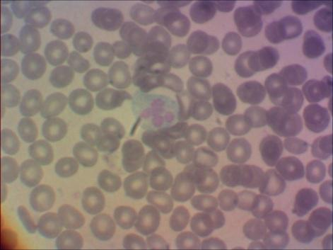 |
| а) | б) | в) |
| Рисунок 2 | ||
|
На фото (рис. 2а) до воздействия: СЦХ — 0,82 А-гр — 5 Фагоцитоз — 57% |
На фото (рис. 2б) через 10 минут после воздействия: СЦХ — 1, 68 А-гр — 3 Фагоцитоз — 59% |
На фото (рис. 2в) через 2 часа после воздействия: СЦХ — 1,59 А-гр — 4 Фагоцитоз — 67 % |
Гранулоциты участвуют в патогенезе многих заболеваний, так как они не только обезвреживают и поглощают бактерии, но и высвобождают различные агенты, которые принимают участие в саморегуляции гомеостатических систем организма.
При глубоком исследовании клеток крови мы не могли обойти стороной важный и современный метод — инфракрасную спектроскопию (ИКС), которая даёт сведения о положении молекул в короткие отрезки времени, а также характер связи между ними и структурно-информационные свойства. Инфракрасные спектры молекул являются тонким, но одновременно и мощным средством исследования структуры вещества. Молекулярная спектроскопия отражает тончайшие и минимальные изменения характера связей атомов, складывание белковых макромолекул и полипептидов и способна помочь в диагностике заболеваний, оценивать фармокинетику лекарственных препаратов, изучать процессы регенерации и экзогенных факторов. ИКС применяется также и в судебном анализе изучения митохондриального генома при идентификации личности и определении отцовства.
ИК-спектроскопия основана на явлении поглощения веществами (в данном случае — кровью) инфракрасного излучения с одновременным возбуждением молекулярных колебаний квантами инфракрасного спектра.
В начальной стадии исследований отметили, что плазма и сыворотка отражает динамику изменений, но амплитуда колебаний небольшая, чем при изучении цельной крови. По мнению современных учёных, это связано с тем, что процедура выделения фрагментов крови влияет на их нативные свойства и характеристики. Мы провели сравнительный анализ показателей инфракрасного спектра крови и увидели быстрые динамические изменения её компонентов после информационного воздействия в области 3500-506 см-1.
Основные задачи исследования:
1. Провести сравнительный анализ показателей степени поглощения в областях ИК-спектра — 3500-3300, 3085-2732, 1831-1623, 1729-1533, 1543-1396, 1470-1330, 1170-1057, 1087-963 см-1, характеризующие химические связи, участвующих в образовании липидных молекул.
2. Изучить особенности аспектов и параметров быстрых изменений исследуемых показателей ИКС крови, возникающих под влиянием информационных полей и экзогенных факторов.
3. Выбрать информативные показатели, временной интервал характеризующих динамику быстрых изменений спектра цельной крови сразу после её взятия до и после коррекции.
4. Использовать выбранные параметры показателей ИКС крови для диагностики заболеваний.
В цельной крови после экзогенных воздействий происходят быстрые изменения показателей, что подтверждает инфракрасный спектр в диапазонах: 3500-3300, 3085-2732, 1831-1623, 1729-1533, 1543-1396, 1470-1330, 1170-1057, 1087-963 см-1.
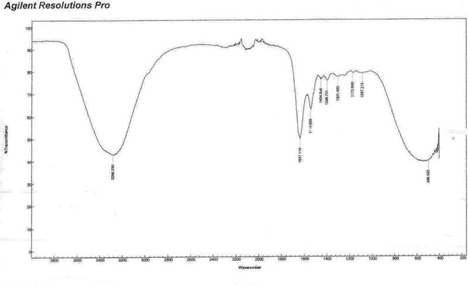Рисунок 3а. До коррекции
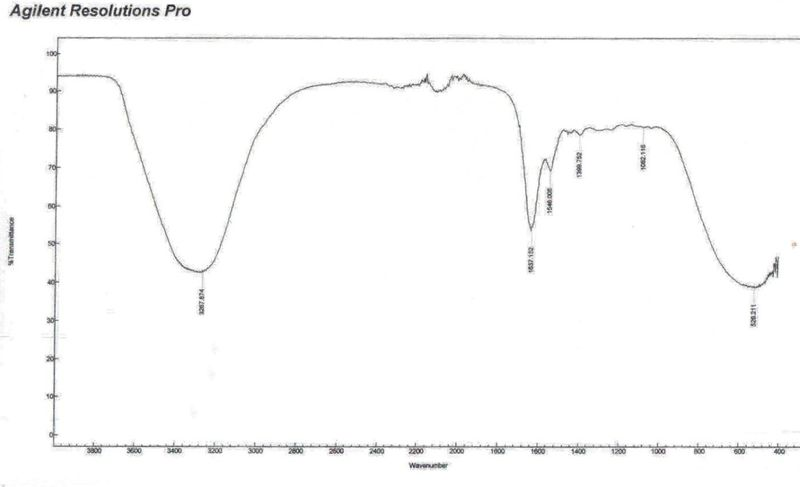Рисунок 3б. После коррекции
При изучении графиков (рис. 3а, 3б) видно, что после коррекции, полос поглощения стало меньше. Спектральный анализ показал, что исчезли идентификации воспалительных процессов в бронхах и напряжение в сердечно-сосудистой системе. Параллельно изменились показания у пациентки и в обще-клинических исследованиях. Например, до коррекции лимфоциты % составляли — 49,2мкр42 при норме 19-37; нейтрофилы % — 41, 6 при норме 47-72.
После воздействия спинового вектора лимфоциты стали — 41,7мкр42, а нейтрофилы — 50,2.
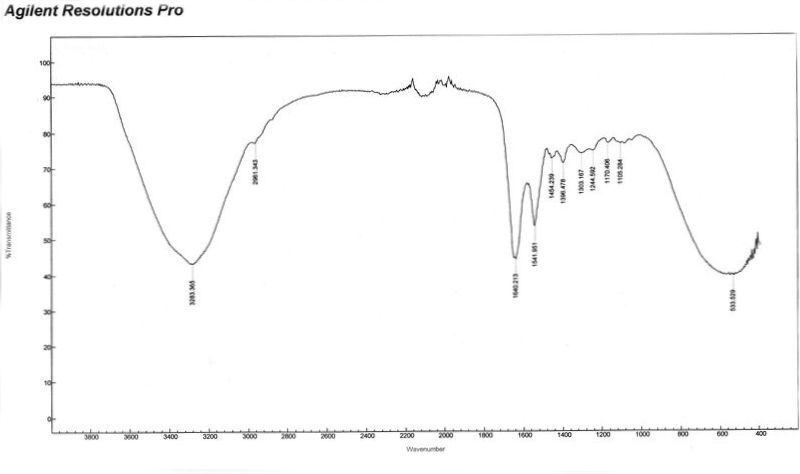Рисунок 4а. До коррекции
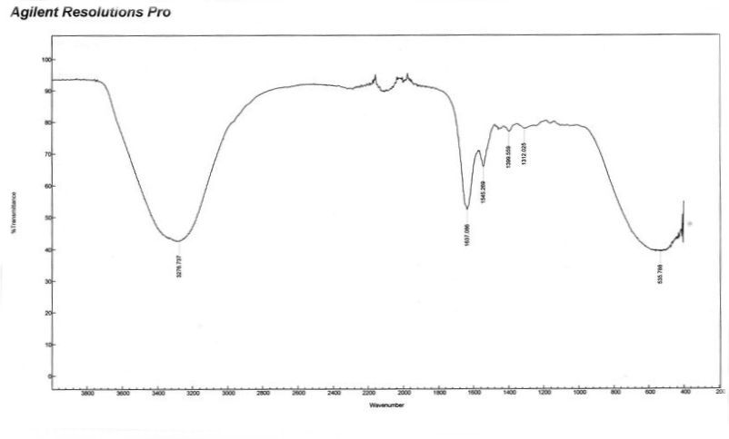Рисунок 4б. После коррекции
На графиках у другого пациента (рис. 4а, 4б) видно, что в ИК-спектре крови происходят глубокие механизмы молекулярных изменений. Исчезли спектры частот, отвечающие за нарушение кровообращения в головном мозге. В клинических анализах уровень гемоглобина (HGB) пришёл в нормальные показатели.
Изучение параметров динамики колебания в короткие временные интервалы даёт принципиально новую информацию, оценивающую особенности функционального состояния организма в норме и патологии.
Человеческий организм — это открытая, самоорганизующаяся и самовосстанавливающаяся система, которая подвержена постоянным изменениям и адаптации к изменяющимся условиям. Система развивается и движется к относительно стабильным структурам благодаря постоянному обмену информацией с окружающей средой. Изменения в любом органе или в клетке выводят весь организм из состояния динамического равновесия в неравновесное. Приток энергии вызывает флуктуации и делает биосистему нерегулируемой, неравновесной и меняет свойства системы. Если параметры изменений достигают определённых критических значений, то система переходит в состояние хаоса. «Хаос, как ни странно звучит для вас, есть проявление беспорядка и порядка одновременно, однако гибкость и лёгкая восприимчивость к любым тонким возмущениям есть основное условие совершенствования Системы…» («Откровения людям Нового века», Послание от 08.10.08, стих 10, книга V).
Максимальная хаотичность неравновесного процесса называется точкой бифуркации. Это точка выбора дальнейшего пути развития. В точках бифуркации некоторые системы в организме находятся перед выбором путей развития, образуя множество динамических микроструктур — фракталов. Однако большинство фрактальных кластеров гибнет в конкурентной борьбе, и выживает та микроструктура, которая смогла адаптироваться и усовершенствоваться к новым условиям.
После точки бифуркации происходит расширение возможностей выздоровления, открывается резервный потенциал, появляются тенденции к реактивности иммунной системы и переход в новое качественное состояние с новым режимом функционирования. Если нет чувствительности к малым возмущениям в клетках, то система заблокирована и возникает болезнь, патология, регресс. Энергоинформационная коррекция помогает организму моделировать оптимальные условия восстановления, предупреждать болезни, стимулировать регенерацию определённых органов или систем, регулировать оздоровительные процедуры.
Безусловно, изменениям в организме должны предшествовать изменения на тонко-полевом уровне, затем на клеточном и позднее на определённом органе или всей системе. Узнать о «пусковом» сигнале можно через исследования количественных и качественных характеристик крови и выявления заболеваний на очень ранней стадии, и оказание терапевтической, гомеопатической, фитотерапевтической, информационной, психологической помощи, реабилитации, направленной не только на организм, но и на сознание человека.
Наталья ЛИТОВА,
Ирина ТРОФИМОВА,
Холдинг группа компаний «Научно-исследовательские институты
Здоровьесберегающих технологий», Ярославский НИИ ЗСТ.